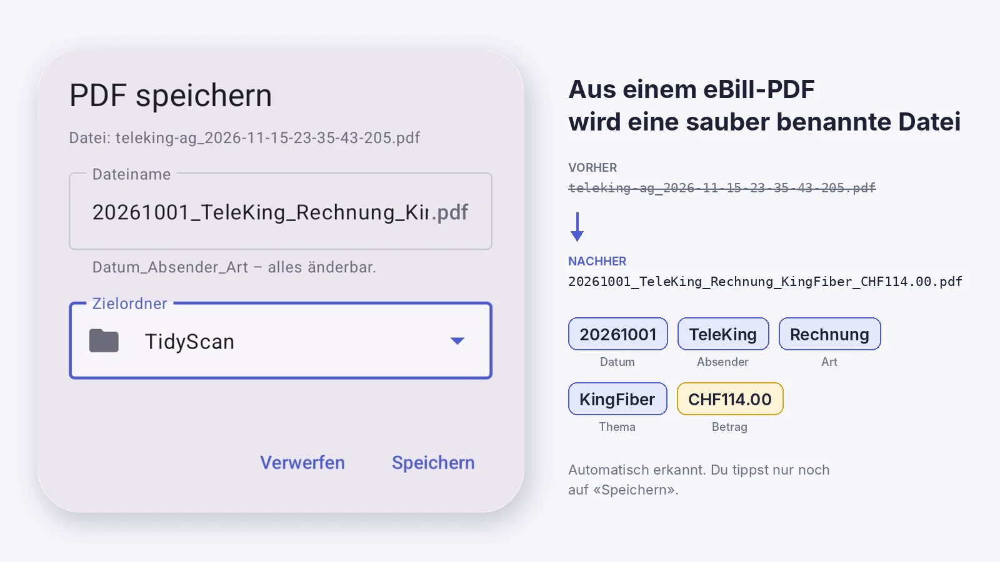

Swiss QR bill: scan it and file it properly
Updated 18 November 2026 · Silvan, founder of TidyScan · 6 min read
When people scan a Swiss QR bill, they usually think of paying it. The banking app does that in seconds. What happens to the paper afterwards, it doesn't solve: the bill ends up on a pile, in a drawer or in the recycling. This guide shows how to name and file QR bills neatly in ten seconds after paying, why you should save eBill invoices yourself and how long keeping them is worth it.
Paying is solved, filing isn't
For years I didn't like filing QR bills. I paid them straight away, then they went on a pile. A year later, just before the tax return, I worked through the whole pile in one evening: first sorting everything into smaller piles, then punching holes and putting them into the right binders. If I had to find something in between, I searched twice: first through the binder to see whether the bill was already filed, then through the pile with all the other letters.
That is exactly the step I built TidyScan for. The banking app reads the QR code to pay. TidyScan reads it to file. Both together take less time than opening the envelope. Today I only keep a few really important documents on paper.
What happens when you scan a Swiss QR bill with TidyScan
When you scan a Swiss QR bill with TidyScan, four steps run automatically:
- Scan: the camera finds the edges of the bill and crops it. Bills with several pages become a single PDF.
- Read the payment part: TidyScan reads the Swiss QR code on the phone, without internet. It provides payee and amount, and for many bills also the invoice date and payment deadline.
- Name: these details produce a file name such as
20261112_Swisscom_Invoice_CHF89.50.pdf. Date first, so the files sort themselves chronologically; amount last, so you see it without opening the file. - File: the PDF lands in the right folder, for example «Invoices». You decide where that folder is: in Google Drive, OneDrive, Dropbox or locally on the phone. If the bill has a payment deadline, TidyScan can suggest a calendar entry.
You confirm the suggestion with one tap or correct it. TidyScan remembers your corrections and suggests the right name and folder for the same company next time.
Important: TidyScan doesn't pay bills. The order is simple: pay with the banking app first, then scan and file the QR bill with TidyScan. After that the paper can go into the recycling.
TidyScan is coming to Google Play soon.
Filing a QR bill: a folder system that lasts
A good filing system for a household doesn't need many folders. Five to seven cover almost everything that comes by post. This is how you can file your QR bills:
| Folder | What goes in | Example file name |
|---|---|---|
| Invoices | Phone, power, subscriptions, tradespeople | 20261112_Swisscom_Invoice_CHF89.50.pdf |
| Insurance and health insurance | Premiums, policies, benefit statements | 20261103_HealthInsurer_Invoice_CHF412.30.pdf |
| Health | Doctor's bills, reports | 20261020_Practice_Invoice_CHF180.00.pdf |
| Taxes | Tax bills, certificates | 20261015_TaxOffice_Invoice_CHF1250.00.pdf |
| Home | Rent, service charges, mortgage | 20261001_Landlord_ServiceCharges_CHF320.00.pdf |
In TidyScan you give each folder a few keywords, such as «health insurance, premium, benefit». The app then decides where a bill belongs. Because all files follow the same scheme, you later find any bill through the search of your storage, cloud or file app: «Swisscom 2026» is enough. A complete template with ten folders is in the guide folder structure template.
eBill: why you should save the PDFs yourself
Many bills no longer come on paper but as eBill directly into your e-banking. That's convenient, but it isn't an archive. According to the eBill FAQ (German), paid bills remain on the eBill platform for 730 days after the due date. After that a bill may be gone, even if you still need it for taxes, a warranty or a dispute.
The fix takes a few seconds: in the eBill portal, tap «Download» on the bill. In the window that opens, don't choose the download button but the three dots, then «Send file» or «Open with» and TidyScan. Depending on the banking app the wording differs slightly. TidyScan reads the PDF bill, names it with the same scheme as your scanned QR bills and files it in the right folder. That way paper and eBill bills sit in the same place, and your archive no longer depends on how long your bank keeps them.

How long should you keep a QR bill?
Private individuals in Switzerland generally have no legal duty to keep records. Keeping them is still worth it, for example as evidence for your tax return, as proof of payment if a reminder arrives, or for warranty claims.
It's different for the self-employed: business records, including invoices, must be kept for ten years. This also applies to sole proprietors and freelancers.
Digitally, space is no longer an issue. A PDF takes a few hundred kilobytes; ten years of household bills fit easily into the free storage of common cloud providers. Only keep paper originals that count as paper, such as signed contracts or certificates. For individual questions a fiduciary can help; this guide is not legal advice.
Old payment slips: they work too
The orange and red payment slips were replaced by the QR bill in October 2022. Many drawers still hold older ones, though. TidyScan can scan those as well: without a QR code, the app reads the text of the first page and recognises date, sender and document type. Only the amount in the file name isn't automatic for old slips; add it by hand if you need it.
What happens to your data
Reading the QR code and naming run offline on your phone. Your bills don't go to any server, and TidyScan needs no account. Only if you switch on the optional AI naming and agree is the first page sent to Google Gemini for analysis, via a server in Zurich that stores no content. Everything else is in the privacy policy.
Conclusion: pay and file in one go
Scanning a Swiss QR bill today usually means: pay and forget. With a second scan, it sits neatly named in the right folder ten seconds later, together with your eBill PDFs. No more pile, no sorting evening before the tax return, and every bill is found in seconds. More on scanning all kinds of invoices is in the guide scan invoices.
Frequent questions
Can I scan a Swiss QR bill with TidyScan and pay it straight away?
No. You pay in your bank's app. TidyScan takes care of the step after that: naming and filing.
Where should I file a QR bill?
In a folder with a few subfolders, such as invoices, insurance, health, taxes and home. If the folder is in a cloud such as Google Drive, OneDrive or Dropbox, you have your bills on every device and they are safe if you lose your phone. If you store locally, make regular backups.
How long do eBill invoices stay in e-banking?
Paid eBill invoices remain on the eBill platform for 730 days after the due date. If you need them longer, save the PDF yourself.
Do I have to keep QR bills as a private person?
Private individuals in Switzerland generally have no legal duty to keep them. For your tax return, warranties and proof of payment it is still worth it. The self-employed must keep business records for ten years.
Does TidyScan work on iPhone?
No, TidyScan is currently only available for Android.